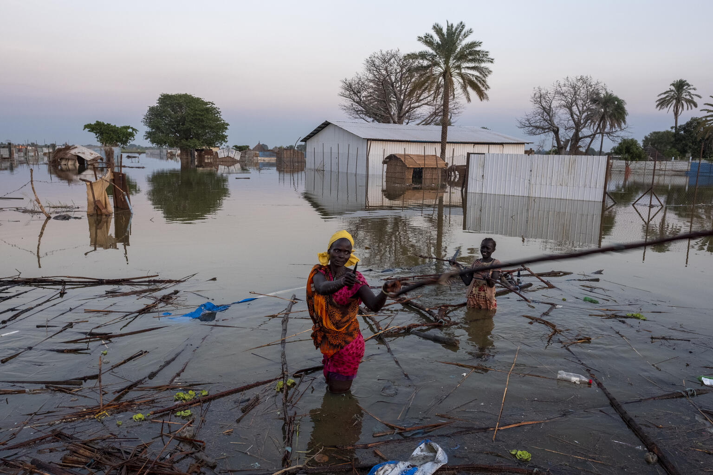
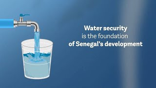

Causes of Water Scarcity
- Population growth: As the world's population grows, the demand for water also increases.
- Climate change: Climate change is causing more frequent droughts and floods, which are disrupting water supplies. 
- Pollution: Pollution of water sources, such as from industrial waste and agricultural runoff, is making water unusable.
- Unsustainable water use: Overuse of water for agriculture, industry, and domestic purposes is putting a strain on water resources.
.jpeg)

.jpeg)
Impacts of Water Scarcity
Water scarcity has a devastating impact on people's lives. It can lead to:
- Health problems: Lack of access to clean water can cause a variety of health problems, including waterborne diseases, malnutrition, and dehydration.
- Economic hardship: Water scarcity can hinder economic development, as businesses and industries rely on water to operate.
- Social conflict: Competition for scarce water resources can lead to conflict and violence.
- Environmental degradation: Overuse of water resources can lead to environmental damage, such as desertification and loss of biodiversity.


-----------------------How To Implementing-----------------------
There are a number of solutions to water scarcity, including:
- Water conservation: Turning off the faucet when not in use, such as while brushing teeth, shaving, or washing dishes. Checking for leaks in pipes, faucets, toilets, and appliances, and fixing them as soon as possible. Installing low-flow showerheads, faucets, toilets, and washing machines that use less water per cycle. Collecting rainwater for watering plants, washing cars, or flushing toilets. Reusing greywater from sinks, showers, or washing machines for irrigation or cleaning purposes. Practicing xeriscaping, which is landscaping with drought-tolerant plants that require less wateretc.

- Water reuse: Water reuse regulations vary by country and region, depending on the type and level of reuse, the quality and source of water, and the legal and institutional frameworks12. Water reuse can be prevented or mitigated by adopting integrated water resources management (IWRM), which is a broad framework for balancing the needs of different users, including the environment2. Water reuse can also be enhanced by using data, technology and communications to improve water monitoring, water-saving, water reuse, desalination, and awareness campaigns2.
- Water management: This is the activity of planning, developing, distributing, and regulating the optimum use of water resources. Water management can be done by adopting integrated water resources management (IWRM), which is a broad framework for balancing the needs of different users, including the environment. Water management can also be enhanced by using data, technology, and communications to improve water monitoring, water-saving, water reuse, desalination, and awareness campaigns.
- Raising awareness: Establishing schools for farmers where they learn how to adapt to climate change with drought-resistant crops, crop rotation, and sustainable ways to raise livestock . beacause Farmers can also contribute to this system of conservation of water by using Drip irrigation system in their fields. This is a type of irrigation system which can be practised by all framers to save water. In this system, water is directly supplied to the plant roots and prevents water from being wasted by evaporation.
------------------------------------Outcomes----------------------------------
- 1.Increased agricultural productivity: Water scarcity can have a significant impact on agriculture, which is a major source of livelihood for many people in India. Improving water availability can increase crop yields and improve food security.
- 2.Improved health: Water scarcity can lead to poor sanitation and hygiene, which can cause diseases such as diarrhea and cholera. Improving water availability can help reduce the incidence of such diseases and improve overall health.
- 3.Economic growth: Water scarcity can limit economic growth by reducing agricultural productivity and limiting access to clean water for industrial use. Improving water availability can help promote economic growth by increasing agricultural productivity and providing more opportunities for industrial development. 
- 4.Environmental benefits: Water scarcity can have negative impacts on the environment, such as reduced biodiversity and degraded ecosystems. Improving water availability can help restore ecosystems and promote biodiversity.
Water scarcity is a major issue in many parts of the world, including India.Improving water scarcity can have several positive outcomes. According to the World Bank, India is among the world’s most water-stressed countries, with only 4% of the global water resources and a per capita water availability of around 1,100 cubic meters, Here are some potential outcomes of improving water scarcity:
-----------------------------Conclusion---------------------------------
Improving water scarcity is a complex issue that requires a multifaceted approach involving government policies, community participation, and technological innovations. However, the potential benefits of improving water scarcity are significant and far-reaching.
Water scarcity is a complex problem with no easy solutions. However, by working together, we can find ways to conserve water, manage water resources sustainably, and ensure that everyone has access to this essential resource.